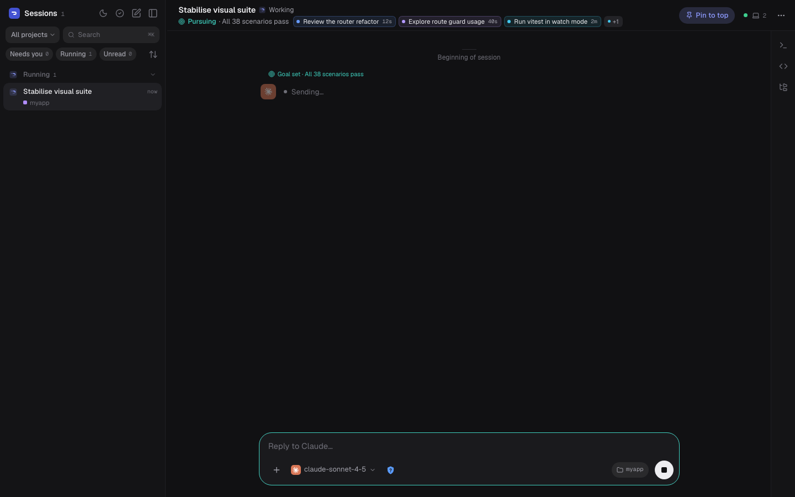

Swimlanes
↗Every task gets a lane on the turn's own clock, so overlap, nesting, results coming back, and tasks outliving the turn are all visible at once. Costs vertical space per task.
Ten ways to put subagents and background tasks inside the turn activity card. Every design draws the same moment: a live turn that has launched two Explore subagents (one finished), a code-reviewer subagent that started its own pnpm test:unit, and a vitest watcher. Use the toggle top right to see each one in light and dark.
Tasks live in the session bar as pills, cut off from the turn that launched them. The turn card only shows a running count in its Show bar.


Every task gets a lane on the turn's own clock, so overlap, nesting, results coming back, and tasks outliving the turn are all visible at once. Costs vertical space per task.
Tasks hang off the strip at the step that launched them, like today's message markers. Clicking one opens the same inline card the messages use. Small footprint, but flags can crowd on a busy turn.
Move today's session-bar pills into the turn that launched them; the session bar keeps only a count. Smallest change from today, reuses the pill and drawer as they are.
A Tasks tab joins Answer, Full log and Usage in the Show bar. Zero cost when closed, full control when open (now-doing, nesting, open, stop). But you only see tasks if you go looking.
A row of mini cards above the Show bar, each with its own tiny activity strip and what it's doing now. Reads like a dashboard; scrolls sideways past three. Busier than the turn around it.
In Full log, the step that launched a task opens in place into the task's own live steps. Tasks sit exactly where they happened in the story. Invisible outside Full log, so pair it with a lighter signal.
One quiet line per running task, right under the head: name, what it's doing this second, elapsed. Glanceable without a click; collapses to a dot count when the turn is folded. Caps at three lines.
Tasks are a stack of small rings at the right of the head, like presence avatars; the ring fills with time. Tap opens a popover list. Tiniest footprint and phone-friendly, but nothing readable until you tap.
On wide screens the card splits: the turn on the left, a Parallel rail on the right that stays visible whatever the Show level. Strong on desktop; on a phone the rail becomes a bottom row and loses its point.
A subagent is a turn too, so draw it with the same turn component, smaller and nested. Shells get a two-line terminal tail. Nesting comes for free; deep trees get tall, so finished ones fold to one line.
liveLaunchedTasks). A task started by a subagent belongs to that subagent, and through it to the same turn.